Carolyn Seiler & Friends Artist Co-op
The gallery Carolyn started in Cocoa Village, full of paintings, ceramics, glass, jewelry and photography by local artists.
Colorful, whimsical paintings of cottages, cats, hurricanes and the changing light, shaped by twenty years in Key West.
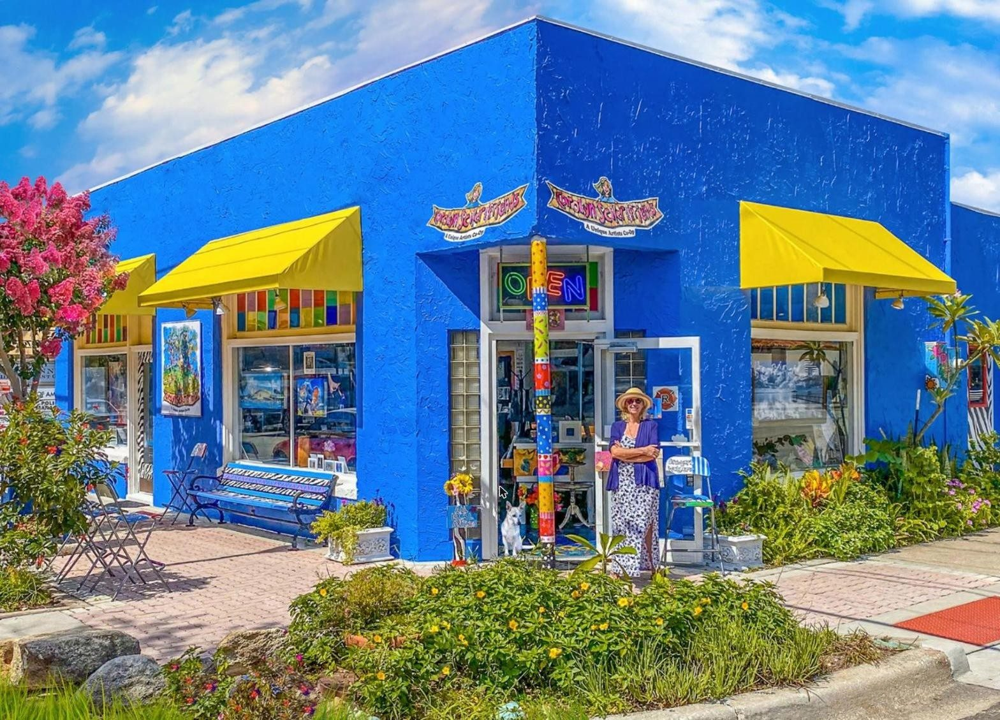
Twenty years in Key West shaped Carolyn's colorful, whimsical style. Working in watercolors, acrylics and mixed media, she paints and draws the world around her. The cats, the hurricanes and the changing light on shady cottages are all sources of inspiration.
Original paintings and prints decorate Carolyn Seiler & Friends, her colorful Cocoa Village gallery shared with more than 30 local artists. She has been part of Cocoa Village for over 15 years.
Carolyn is also a veteran of many archaeological digs in South America, recording artifacts through detailed drawings. Her lifelong fascination with trial sketching began during the John Gotti trials in Brooklyn, New York.
Originally from Long Island, New York, she lives with her Search and Rescue husband (a real-life hero, now retired) and their occasional cat.
Originals and prints are available at the gallery in Cocoa Village.
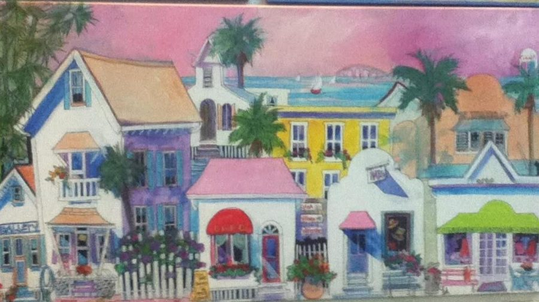
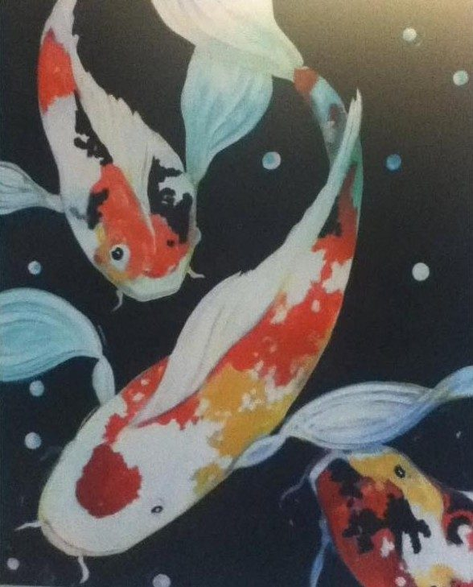
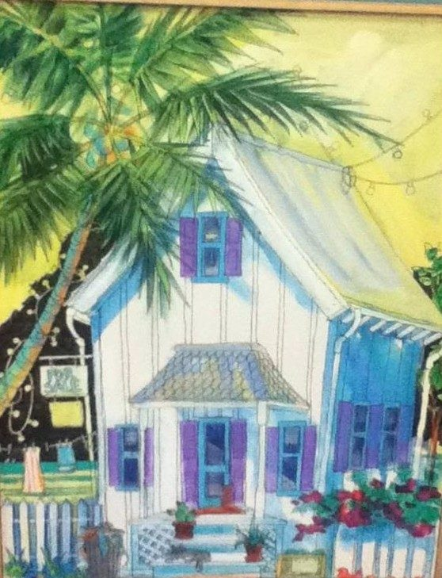
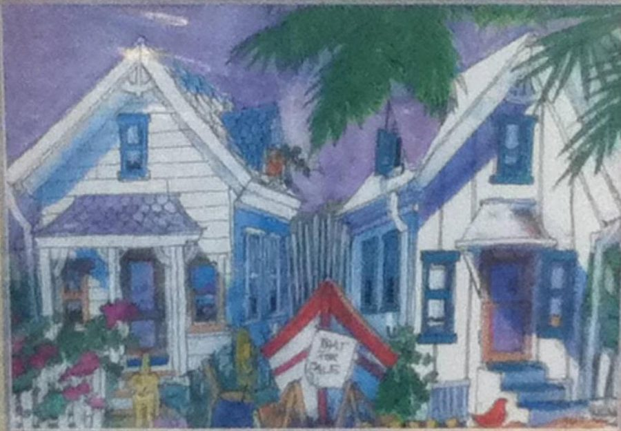
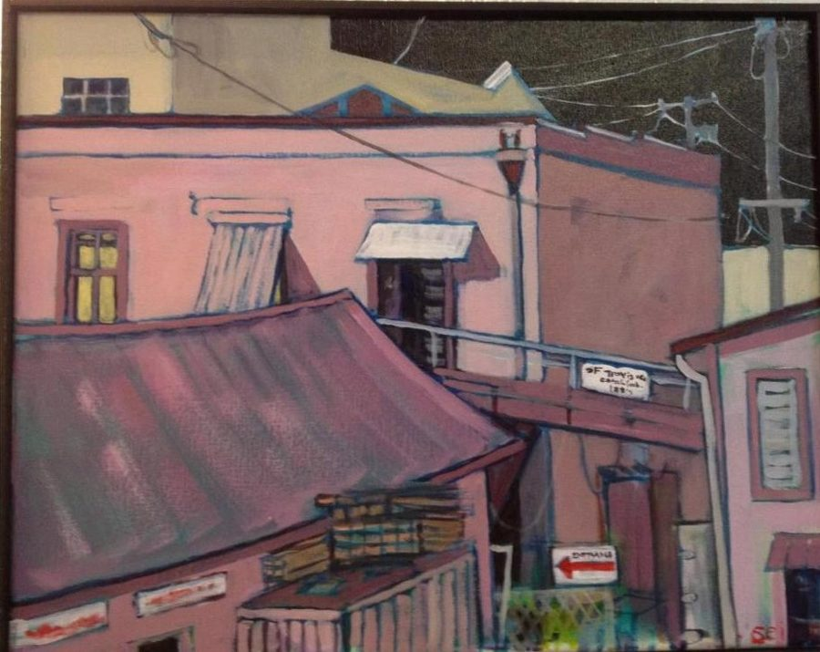
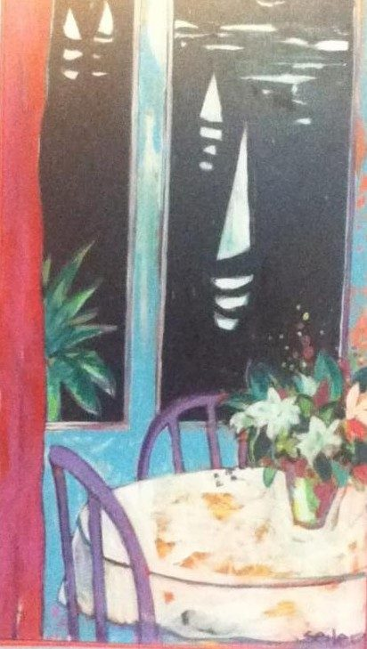
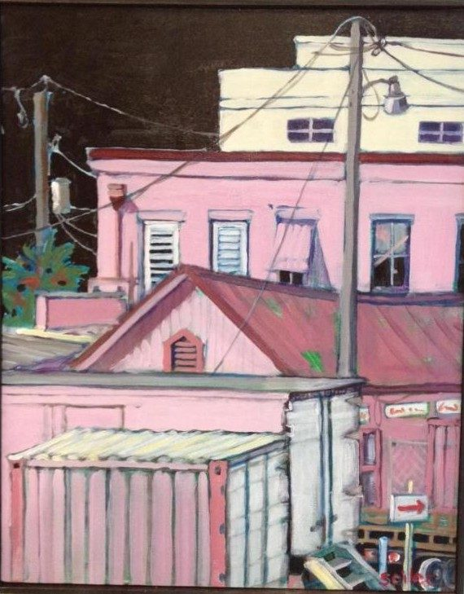
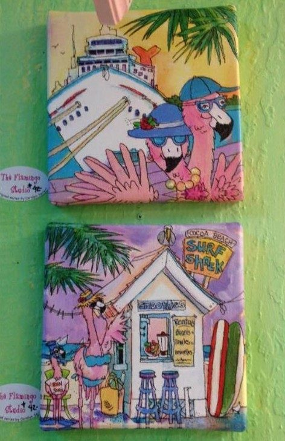
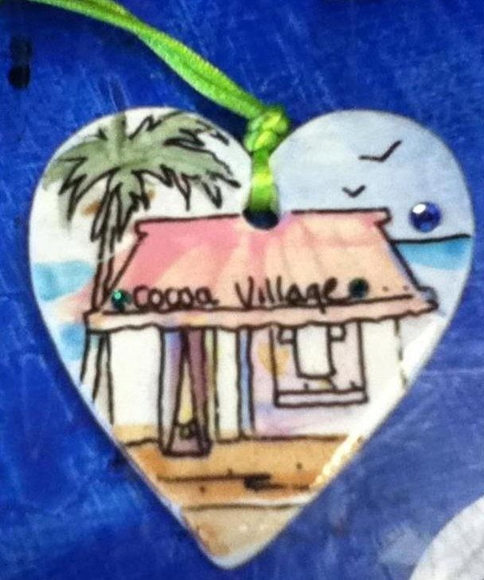
Interested in a piece? Call the gallery at 321-637-0444.
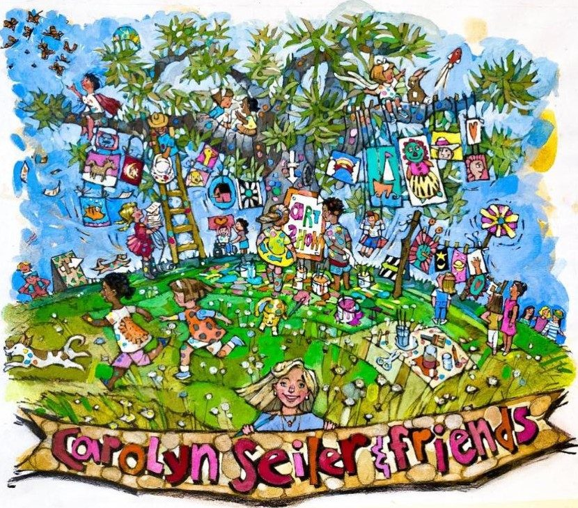
The gallery Carolyn started in Cocoa Village, full of paintings, ceramics, glass, jewelry and photography by local artists.
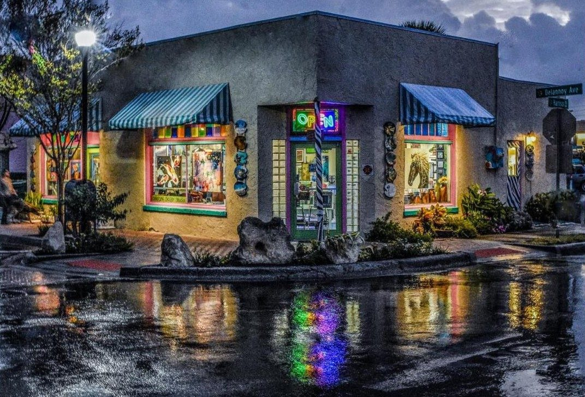